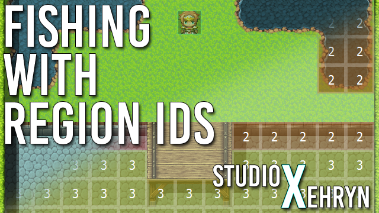

Fishing with Region IDs
Engine: RPG Maker MV and MZ
Difficulty: Easy
This is a tutorial on using region IDs to determine fishing spots, allowing players to fish anywhere that is marked with regions, like in the Pokemon games.
View Tutorial
Character Spritesheets and Animations
Engine: RPG Maker VX Ace, MV, and MZ
Difficulty: Easy
This tutorial is all about the arrangement of character spritesheets and animations, and aims to clear up any confusion or misconceptions surrounding sprites.
View Tutorial
Crumbling Floor Puzzle (Turn-Based)
Engine: RPG Maker VX Ace and MV
Difficulty: Easy
This is a tutorial on making a turn-based crumbling floor puzzle, just like the Sootopolis Gym puzzle in Pokemon Ruby/Sapphire/Emerald. If you are not familiar with the puzzle, stepping on all the floor tiles will trigger an event, however each tile may only be stepped on once. Stepping on a tile twice will drop the player into another room.
View Tutorial
Evented Fishing System
Engine: RPG Maker VX Ace
Difficulty: Easy
This is a tutorial on making an evented fishing system (or any sort of reflex event), as seen in Gate of Providence!
View Tutorial